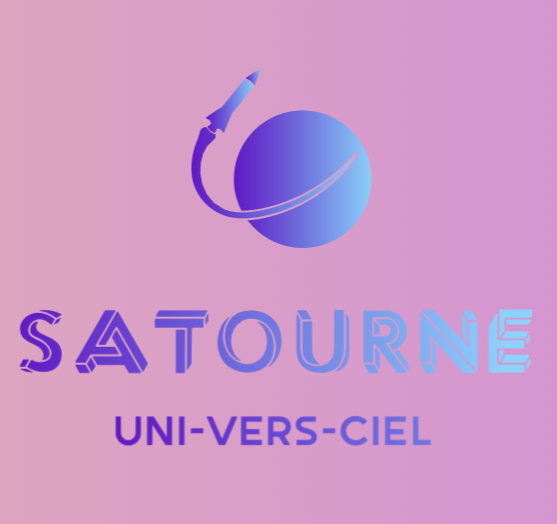
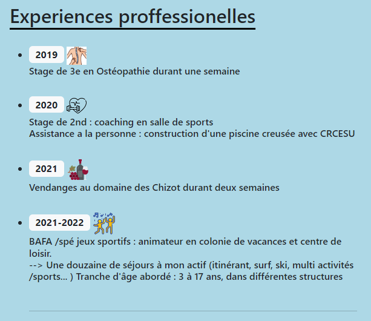

Portfolio
Présentation
CV
Projets
Vue d'ensemble
Gros Projet 1
Gros Projet 2
Contact
Projets
Ici vous retrouverez tous les projets menés au cours de mon apprentissage
.
Projet 5
...
Création d'un site marchand fictif,
parc d'attraction spatiale en low-code.
+ Méthode agile
Projet Satourne y faire un tour.

Site marchand
Projet n°1 mi-octobre 2022
Elaboration d'un CV version web afin d'user et de nous familiariser d'avantage avec HTML5/CSS.
CV version Web y jeter un oeuil.

CV.html
Projet n°2 fin octobre 2022
Création de ce portfolio afin de le mettre à votre disposition
Portfolio
Projet n°3 fin octobre 2022
.
Projet 4
...